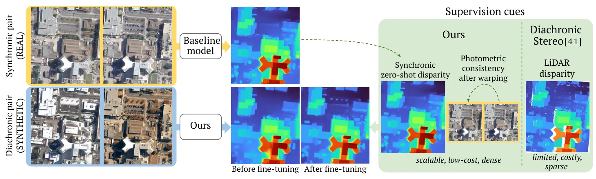
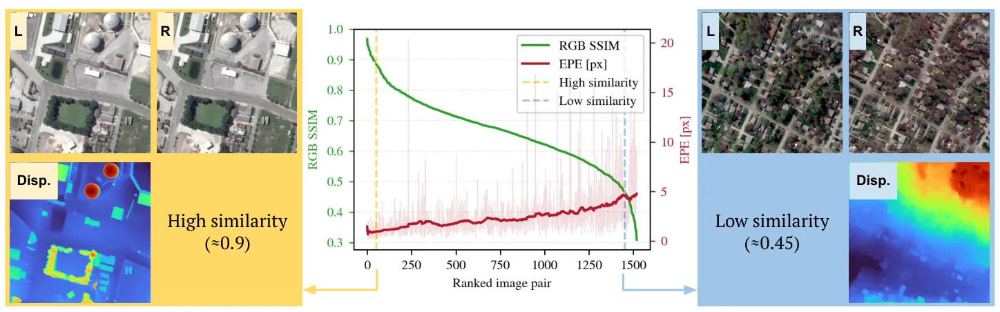
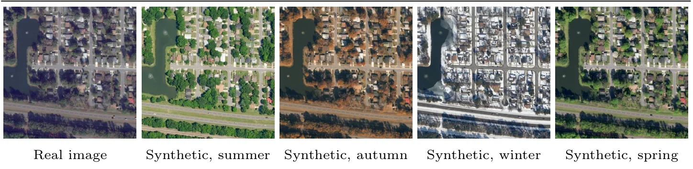
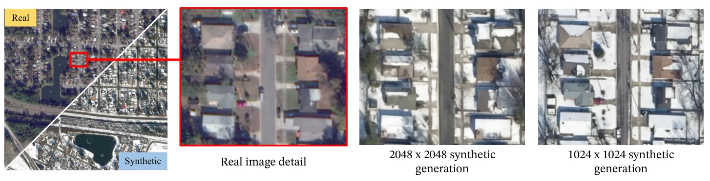

SeasonStereo：借助生成式 AI 的跨日期卫星影像稳健稠密立体匹配SeasonStereo: Robust Dense Stereo Matching for Multi-Date Satellite Imagery via Generative AI
跨时相鲁棒 stereo 对大范围摄影测量与三维重建有实际价值，监督成本低；卫星姿态误差、真实地表变化和跨区域泛化待核查。
一句话工作总结
以可控季节变化合成训练对和 foundation geometry priors，实现无需 LiDAR 标签的跨日期卫星稠密立体重建。
摘要
SeasonStereo 解决不同日期卫星图像因季节和光照变化导致的 dense stereo matching 困难。方法利用可控季节外观变化的 synthetic image pairs 训练 disparity estimation，并结合 foundation models 的 zero-shot geometric priors，避免依赖大规模对齐的真实跨日期影像和 LiDAR geometry labels。摘要称其精度匹配 SOTA LiDAR-supervised models，同时恢复更锐利的几何细节，为低监督的大范围异构卫星影像三维重建提供路径。
Accurate 3D reconstruction from satellite imagery typically relies on near-simultaneous stereo pairs, limiting its applicability to diachronic settings where multi-date images exhibit varying seasonal and illumination conditions. Training dense stereo matching models robust to appearance changes is a long-standing challenge, as aligned multi-date imagery and ground-truth geometry are costly to obtain at scale. We propose SeasonStereo, a scalable framework that addresses disparity estimation from diachronic satellite images by training on synthetic image pairs with controlled seasonal appearance variation, while leveraging zero-shot geometric priors from foundation models. SeasonStereo matches the accuracy of state-of-the-art LiDAR-supervised models, while producing sharper geometric details without requiring aligned real multi-date training products or LiDAR-derived labels. As a result, SeasonStereo offers a practical path toward large-scale 3D reconstruction from heterogeneous satellite images with reduced supervision cost.
中文解读摘录
- 作者：Álvaro Díaz-Laureano, Roger Marí, Elías Masquil, Pablo Arias, Gabriele Facciolo
- 价值判断：用可控季节变化的 synthetic pairs 训练 diachronic stereo，并借助 foundation model 的 zero-shot geometric priors，降低跨季节卫星三维重建对对齐真值和 LiDAR labels 的依赖。
- 结果与边界：摘要称精度匹配 SOTA LiDAR-supervised models，并恢复更锐利几何细节。需核查卫星 RPC/姿态误差处理、地表真实变化、阴影/云层和跨区域泛化。
- 链接：arXiv · PDF
图表/页面预览
{kind=link}

{kind=link}

{kind=link}

{kind=link}
